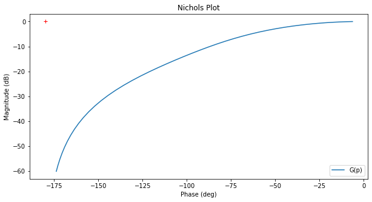
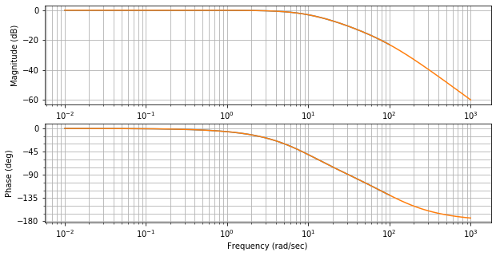
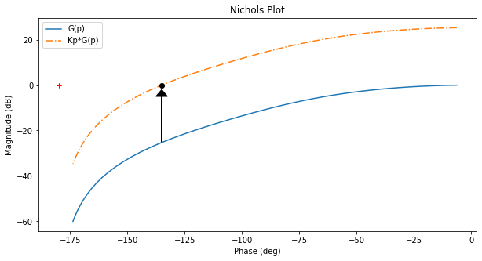
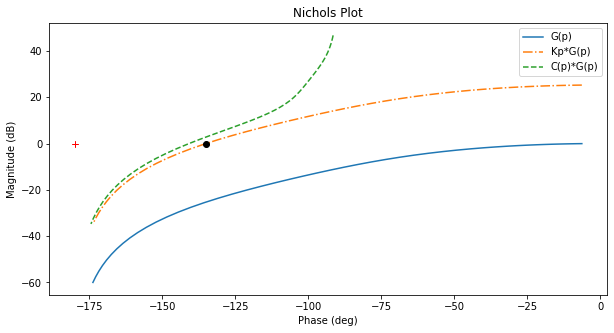
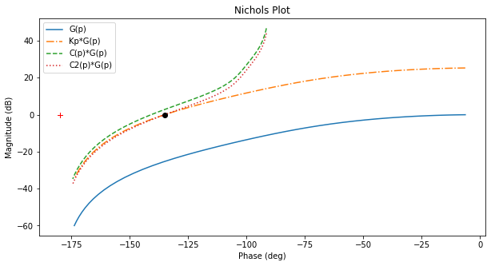
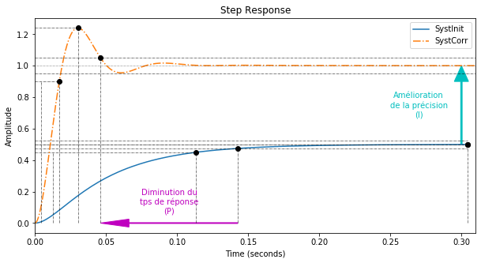
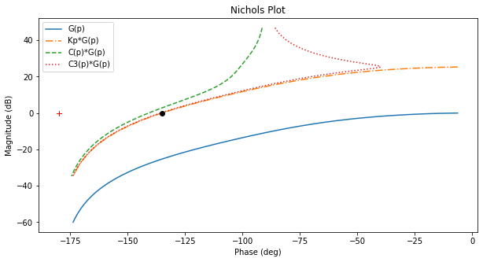
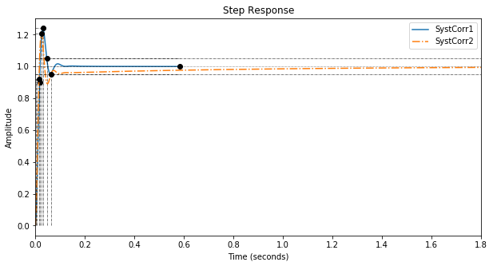
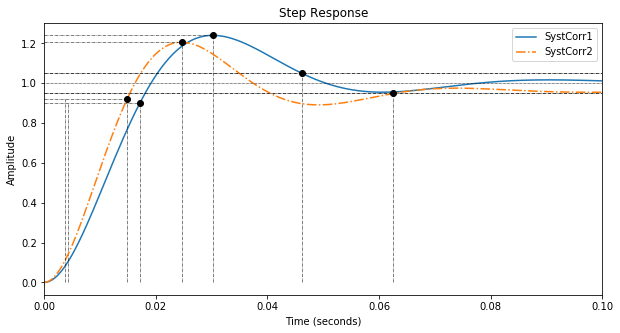

Solution:
+ show/hide code from IPython.display import display, Markdown
from control.matlab import * # Python Control Systems Toolbox (compatibility with MATLAB)
import numpy as np # Library to manipulate array and matrix
import matplotlib.pyplot as plt # Library to create figures and plots
import math # Library to be able to do some mathematical operations
import ReguLabFct as rlf # Library useful for the laboratory of regulation of Gramme
# Fonction de transfert en boucle ouverte
G1 = tf(1, [0.1, 1])
G2 = tf(1, [0.01, 1])
G = G1*G2 # G de l'énoncé
fig = plt.figure("Nichols",figsize=(10,5))
ax = fig.subplots()
rlf.nichols(G, labels=['G(p)'], NameOfFigure = "Nichols")

+ show/hide code MP = 45
fig = plt.figure("Bode",figsize=(10,5))
ax = fig.subplots()
mag, w = rlf.getValues(G, -180+MP, printValue=True, NameOfFigure="Bode")
Gain à -135° = -25.305128094489127 dB
Fréquence à -135° = 118.41516943588255 rad/sec

+ show/hide code Kp = 1/mag # Donne directement la valeur de l'amplitude => Pas besoin de la convertir à partir d'une valeur en dB + Kp va à l'inverse de ce qu'on mesure
display(Markdown(rf"Sur le tracé du système en BO (trait plein), on relève que pour une phase de {MP}°, le gain vaut : {20*np.log10(mag):.1f} dB."))
display(Markdown(rf"Nous allons donc choisir un correcteur de gain $K_P$={Kp:.2f} qui permettra de relever la courbe de {-20*np.log10(mag):.1f} dB afin d’assurer une marge de phase de {MP}°."))
Sur le tracé du système en BO (trait plein), on relève que pour une
phase de 45°, le gain vaut : -25.3 dB.
Nous allons donc choisir un correcteur de gain \(K_P\)=18.42 qui
permettra de relever la courbe de 25.3 dB afin d’assurer une marge de
phase de 45°.
+ show/hide code fig = plt.figure("Nichols",figsize=(10,5))
ax = fig.subplots()
rlf.nichols(G, labels=['G(p)'], NameOfFigure = "Nichols")
rlf.nichols(Kp*G, labels=['Kp*G(p)'], NameOfFigure = "Nichols", linestyle = '-.')
ax.plot(-180+MP, 0,'ko'); # ; pour supprimer les lignes de sortie matplotlib
ax.arrow(-180+MP, 20*np.log10(mag), 0, -20*np.log10(mag)-2,
length_includes_head=True, width=.05, head_width=5, head_length=3, color='k');
gm, pm, wg, wp = margin(Kp*G) # Extract the gain margin (Gm) and the phase margin (Pm)
print("Marge de phase du système corrigé = {:.1f}°.".format(pm))
Marge de phase du système corrigé = 45.0°.

+ show/hide code display(Markdown(r"Sur la courbe $K_P*G(p)$ (trait mixe), on va positionner le terme I de manière à ce qu’il agisse sur les basses fréquences (effet en régime établi) sans modifier les pulsations proches du point critique càd $\omega_{critique}$="rf"{w:.2f} rad/s."))
Sur la courbe \(K_P*G(p)\) (trait mixe), on va positionner le terme
I de manière à ce qu’il agisse sur les basses fréquences (effet en
régime établi) sans modifier les pulsations proches du point critique
càd \(\omega_{critique}\)=118.42 rad/s.
+ show/hide code tI = 10/w
display(Markdown(r"Le terme I doit être positionné de manière à ce que $\omega_{critique}>10\frac{1}{\tau_{I}}$, soit $\tau_I$>"rf"{tI:.4f}s."))
Le terme I doit être positionné de manière à ce que
\(\omega_{critique}>10\frac{1}{\tau_{I}}\), soit
\(\tau_I\)>0.0844s.
+ show/hide code Corr = Kp*tf([tI, 1],[tI, 0])
fig = plt.figure("Nichols",figsize=(10,5))
ax = fig.subplots()
rlf.nichols(G, labels=['G(p)'], NameOfFigure = "Nichols")
rlf.nichols(Kp*G, labels=['Kp*G(p)'], NameOfFigure = "Nichols", linestyle = '-.')
rlf.nichols(Corr*G, labels=['C(p)*G(p)'], NameOfFigure = "Nichols", linestyle = '--')
ax.plot(-180+MP, 0,'ko'); # ; pour supprimer les lignes de sortie matplotlib

En trait interrompu: le système ainsi corrigé. Constatons que nos
précautions se basent sur l’étude asymptotique du correcteur PI qui pour
–135° présente un module d’environ 3 dB, nous pourrions donc
Soit redescendre la courbe de
+ show/hide code mag_PI, w_PI = rlf.getValues(Corr*G, -180+MP, printValue = False)
plt.close()
Kp2 = 1/mag_PI*Kp
display(Markdown(rf"{20*np.log10(mag_PI):.1f} dB avec un gain de {1/mag_PI:.3f}, ce qui revient à adapter le correcteur $K_P$= {1/mag_PI:.3f}*{Kp:.2f} = {Kp2:.2f}."))
2.8 dB avec un gain de 0.724, ce qui revient à adapter le correcteur
\(K_P\)= 0.724*18.42 = 13.34.
+ show/hide code display(Markdown(r"""L’équation du correcteur est donc : $C(p)=K_P\frac{1+\tau_Ip}{\tau_Ip}$
dont les paramètres sont: $K_P$="""rf"{Kp2:.2f} et $\tau_I$={tI:.4f} secondes."))
display(Markdown("Soit, C(p) ="))
Corr2 = Kp2*tf([tI, 1],[tI, 0])
print(Corr2)
L’équation du correcteur est donc :
\(C(p)=K_P\frac{1+\tau_Ip}{\tau_Ip}\)
dont les paramètres sont: \(K_P\)=13.34 et \(\tau_I\)=0.0844
secondes.
Soit, C(p) =
1.126 s + 13.34
---------------
0.08445 s
Avertissement
Remarque: le ‘p’ de la formule est noté ‘s’ dans la notation anglophone
et donc dans les résultats calculés!
Ainsi corrigé, les performances du système au niveau de la réponse
indicielle se chiffrent:
+ show/hide code fig = plt.figure("Nichols",figsize=(10,5))
ax = fig.subplots()
rlf.nichols(G, labels=['G(p)'], NameOfFigure = "Nichols")
rlf.nichols(Kp*G, labels=['Kp*G(p)'], NameOfFigure = "Nichols", linestyle = '-.')
rlf.nichols(Corr*G, labels=['C(p)*G(p)'], NameOfFigure = "Nichols", linestyle = '--')
rlf.nichols(Corr2*G, labels=['C2(p)*G(p)'], NameOfFigure = "Nichols", linestyle = ':')
ax.plot(-180+MP, 0,'ko'); # ; pour supprimer les lignes de sortie matplotlib

+ show/hide code fig = plt.figure("Step Response",figsize=(10,5))
ax = fig.subplots()
# Système non corrigé
# -------------------
Gbf = feedback(G,1)
info = rlf.info()
rlf.stepWithInfo(Gbf, info, NameOfFigure="Step Response", sysName='SystInit') # Renvoie toutes les infos du step
ep = (1-info.DCGain)*100 # Erreur de position
gm, pm, wg, wp = margin(G) # Extract the gain margin (Gm) and the phase margin (Pm)
print("\nSystème non corrigé")
print("-------------------")
print(f"""Marge de phase = {pm:.3f}°
DC gain = {info.DCGain:.3f} => Erreur de position = {ep:.1f}%
Rise Time = {info.RiseTime:.3f} s
Peak amplitude = {info.Peak:.3f}
Overshoot = {info.Overshoot:.3}%
Settling Time = {info.SettlingTime:.3f} s
""")
# Système corrigé
# ---------------
Gbf_PI = feedback(Corr2*G,1)
info_PI = rlf.info()
rlf.stepWithInfo(Gbf_PI, info_PI, NameOfFigure="Step Response", sysName='SystCorr', linestyle='-.') # Renvoie toutes les infos du step
ep_PI = (1-info_PI.DCGain)*100 # Erreur de position
gm, pm, wg, wp = margin(Corr2*G) # Extract the gain margin (Gm) and the phase margin (Pm)
print("\nSystème corrigé")
print("---------------")
print(f"""Marge de phase = {pm:.3f}°
DC gain = {info_PI.DCGain:.3f} => Erreur de position = {ep_PI:.1f}%
Rise Time = {info_PI.RiseTime:.3f} s
Peak amplitude = {info_PI.Peak:.3f}
Overshoot = {info_PI.Overshoot:.3}%
Settling Time = {info_PI.SettlingTime:.3f} s
""")
# Ajout de détails
ax.set_xlim(0, 0.31); # Zoom sur la région d'intérêt
ax.arrow(0.3, info.DCGain, 0, (info_PI.DCGain-info.DCGain),
length_includes_head=True, width=.001, head_width=0.01, head_length=0.1, color='c');
ax.text(0.27, info.DCGain+(info_PI.DCGain-info.DCGain)/2, 'Amélioration\nde la précision\n(I)', horizontalalignment = 'center', verticalalignment='center', color='c');
ax.arrow(info.SettlingTime, 0, -(info.SettlingTime-info_PI.SettlingTime), 0,
length_includes_head=True, width=.005, head_width=0.05, head_length=0.02, color='m');
ax.text(info.SettlingTime-(info.SettlingTime-info_PI.SettlingTime)/2, 0.05, 'Diminution du\ntps de réponse\n(P)', verticalalignment='bottom',
horizontalalignment='center', color='m');
Système non corrigé
-------------------
Marge de phase = inf°
DC gain = 0.499 => Erreur de position = 50.1%
Rise Time = 0.101 s
Peak amplitude = 0.499
Overshoot = 0.0%
Settling Time = 0.143 s
Système corrigé
---------------
Marge de phase = 45.000°
DC gain = 1.000 => Erreur de position = -0.0%
Rise Time = 0.013 s
Peak amplitude = 1.240
Overshoot = 24.0%
Settling Time = 0.046 s

Soit adapter \(\tau_I\) :
+ show/hide code tI = 100/w
display(Markdown(r"""
Puisque à 120 rad/s, l’effet de 3 dB est trop marqué, nous pouvons décaler l’effet de I vers les basses fréquences :
$\omega_{critique}>100\frac{1}{\tau_I}$ soit $\tau_I >$"""rf' {tI:.4f}s.'))
display(Markdown(r"Donc $C(p)=K_P\frac{1+\tau_Ip}{\tau_Ip}$ avec: $K_P$="rf'{Kp:.2f} et $\tau_I$={tI:.4f}'))
Corr3 = Kp*tf([tI, 1],[tI, 0])
display(Markdown("Soit, C(p) ="))
print(Corr3)
Puisque à 120 rad/s, l’effet de 3 dB est trop marqué, nous pouvons
décaler l’effet de I vers les basses fréquences :
\(\omega_{critique}>100\frac{1}{\tau_I}\) soit \(\tau_I >\)
0.8445s.
Donc \(C(p)=K_P\frac{1+\tau_Ip}{\tau_Ip}\) avec: \(K_P\)=18.42
et \(\tau_I\)=0.8445
Soit, C(p) =
15.55 s + 18.42
---------------
0.8445 s
fig = plt.figure("Nichols",figsize=(10,5))
ax = fig.subplots()
rlf.nichols(G, labels=['G(p)'], NameOfFigure = "Nichols")
rlf.nichols(Kp*G, labels=['Kp*G(p)'], NameOfFigure = "Nichols", linestyle = '-.')
rlf.nichols(Corr*G, labels=['C(p)*G(p)'], NameOfFigure = "Nichols", linestyle = '--')
rlf.nichols(Corr3*G, labels=['C3(p)*G(p)'], NameOfFigure = "Nichols", linestyle = ':')
ax.plot(-180+MP, 0,'ko'); # ; pour supprimer les lignes de sortie matplotlib

Si on compare les réponses temporelles des systèmes ainsi corrigés :
+ show/hide code fig = plt.figure("Step Response",figsize=(10,5))
ax1 = plt.subplot()
# Système corrigé via Kp
# ----------------------
Gbf_PI = feedback(Corr2*G,1)
info_PI = rlf.info()
rlf.stepWithInfo(Gbf_PI, info_PI, NameOfFigure="Step Response", sysName='SystCorr1', linestyle='-') # Renvoie toutes les infos du step
ep_PI = (1-info_PI.DCGain)*100 # Erreur de position
gm, pm, wg, wp = margin(Corr2*G) # Extract the gain margin (Gm) and the phase margin (Pm)
print("\nSystème corrigé via Kp")
print("----------------------")
print(f"""Marge de phase = {pm:.3f}°
DC gain = {info_PI.DCGain:.3f} => Erreur de position = {ep_PI:.1f}%
Rise Time = {info_PI.RiseTime:.3f} s
Peak amplitude = {info_PI.Peak:.3f}
Overshoot = {info_PI.Overshoot:.3}%
Settling Time = {info_PI.SettlingTime:.3f} s
""")
# Système corrigé via tI
# ----------------------
Gbf_PI2 = feedback(Corr3*G,1)
info_PI2 = rlf.info()
rlf.stepWithInfo(Gbf_PI2, info_PI2, NameOfFigure="Step Response", sysName='SystCorr2', linestyle='-.') # Renvoie toutes les infos du step
ep_PI2 = (1-info_PI2.DCGain)*100 # Erreur de position
gm, pm, wg, wp = margin(Corr3*G) # Extract the gain margin (Gm) and the phase margin (Pm)
print("\nSystème corrigé via tI")
print("----------------------")
print(f"""Marge de phase = {pm:.3f}°
DC gain = {info_PI2.DCGain:.3f} => Erreur de position = {ep_PI2:.1f}%
Rise Time = {info_PI2.RiseTime:.3f} s
Peak amplitude = {info_PI2.Peak:.3f}
Overshoot = {info_PI2.Overshoot:.3}%
Settling Time = {info_PI2.SettlingTime:.3f} s
""")
ax1.set_xlim(0, 1.8); # Zoom sur la région d'intérêt
fig = plt.figure("Zoomed Step Response",figsize=(10,5))
ax2 = plt.subplot()
rlf.stepWithInfo(Gbf_PI, info_PI, NameOfFigure="Zoomed Step Response", sysName='SystCorr1', linestyle='-') # Renvoie toutes les infos du step
rlf.stepWithInfo(Gbf_PI2, info_PI2, NameOfFigure="Zoomed Step Response", sysName='SystCorr2', linestyle='-.') # Renvoie toutes les infos du step
ax2.set_xlim(0, 0.1); # Zoom sur la région d'intérêt
Système corrigé via Kp
----------------------
Marge de phase = 45.000°
DC gain = 1.000 => Erreur de position = -0.0%
Rise Time = 0.013 s
Peak amplitude = 1.240
Overshoot = 24.0%
Settling Time = 0.046 s
Système corrigé via tI
----------------------
Marge de phase = 44.434°
DC gain = 1.000 => Erreur de position = 0.0%
Rise Time = 0.011 s
Peak amplitude = 1.206
Overshoot = 20.6%
Settling Time = 0.063 s


On constate que la deuxième solution permet un temps de montée plus
court et un dépassement moins important mais au détriment du temps de
réponse (voir figure du dessus pour estimer le temps nécessaire pour
réellement annuler l’erreur de position …).